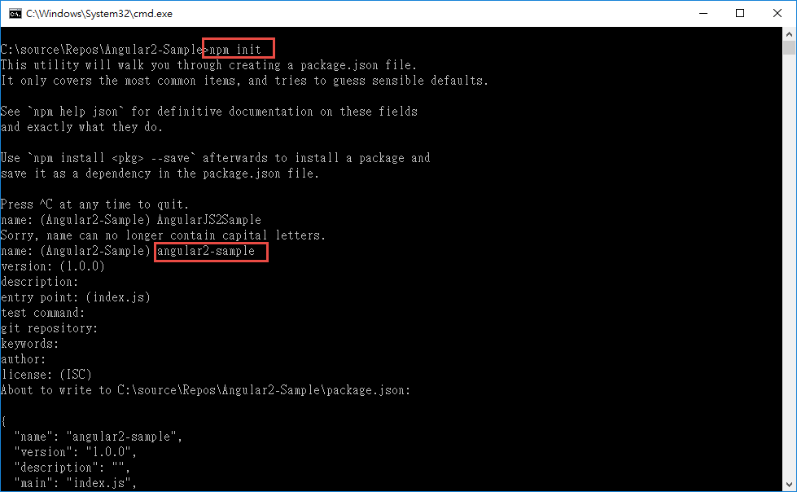
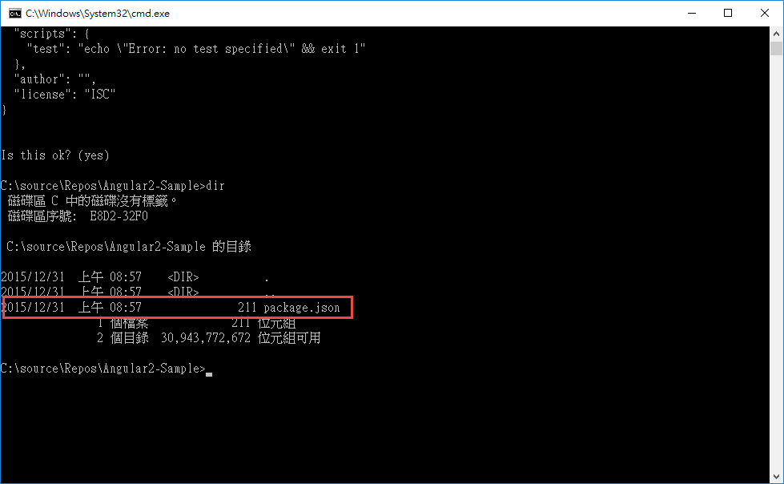
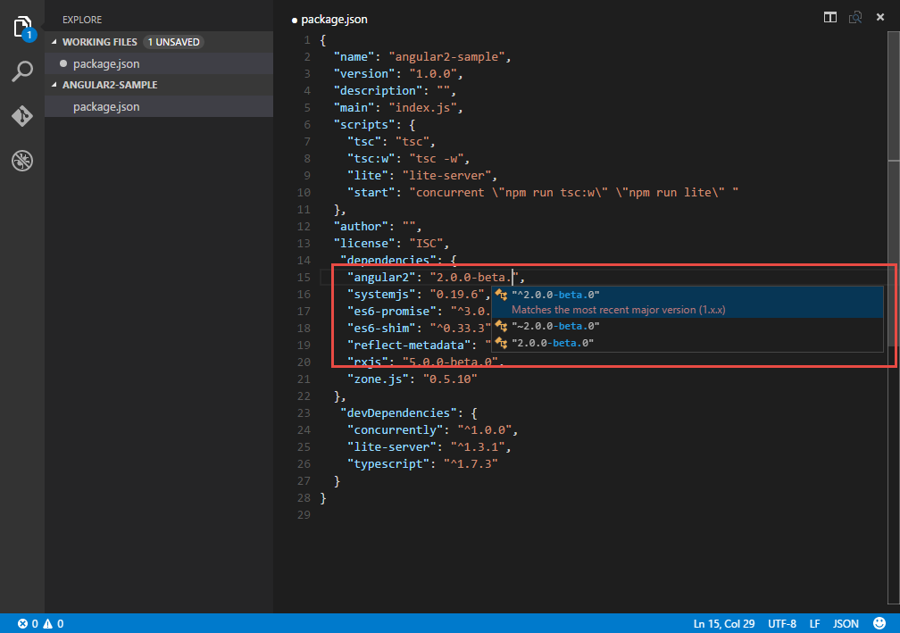
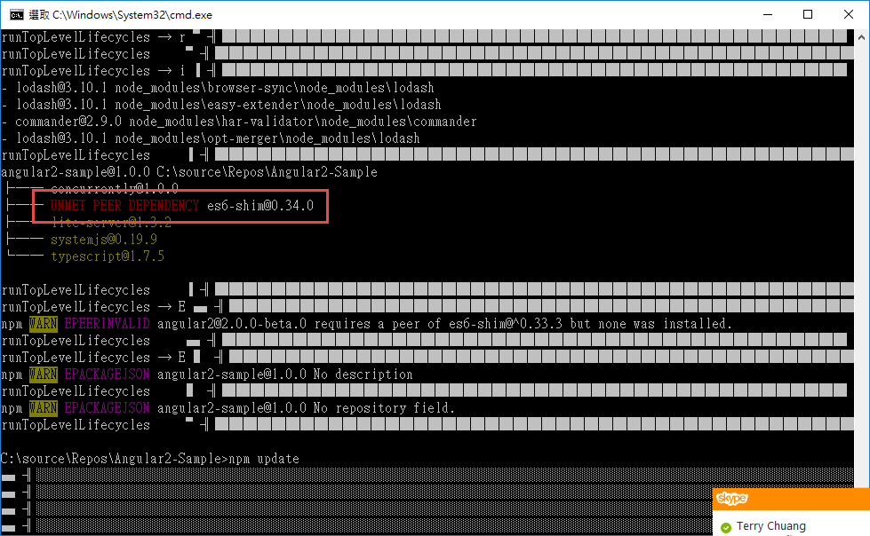
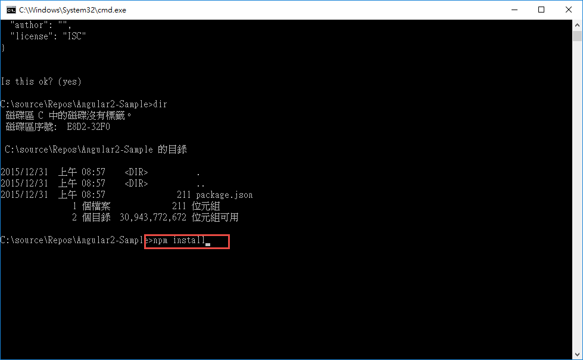
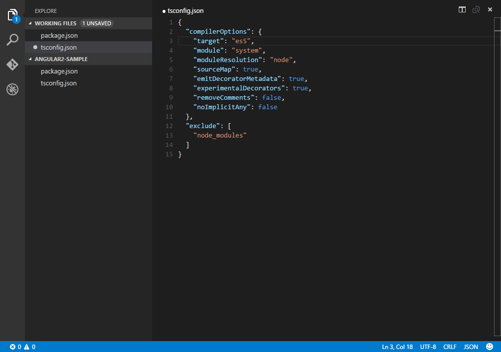
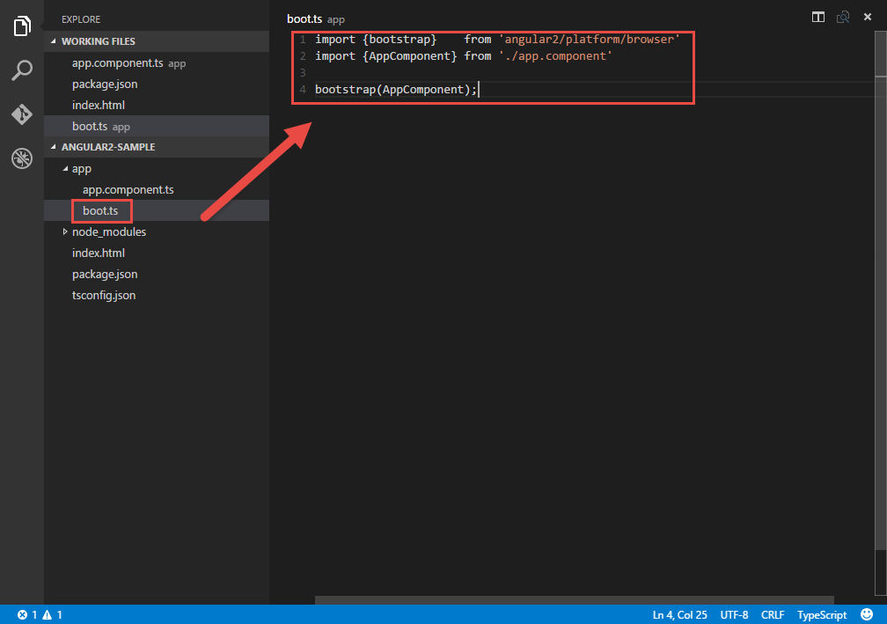
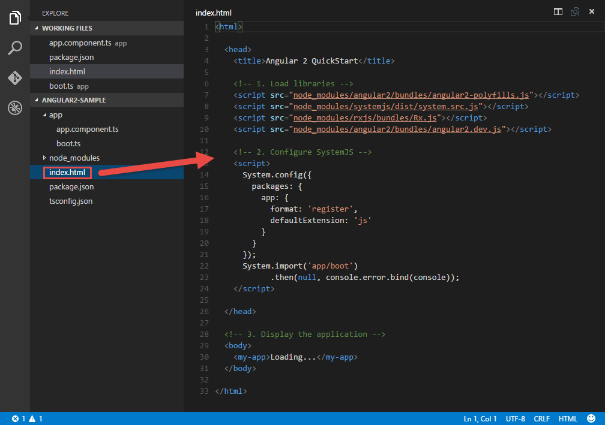
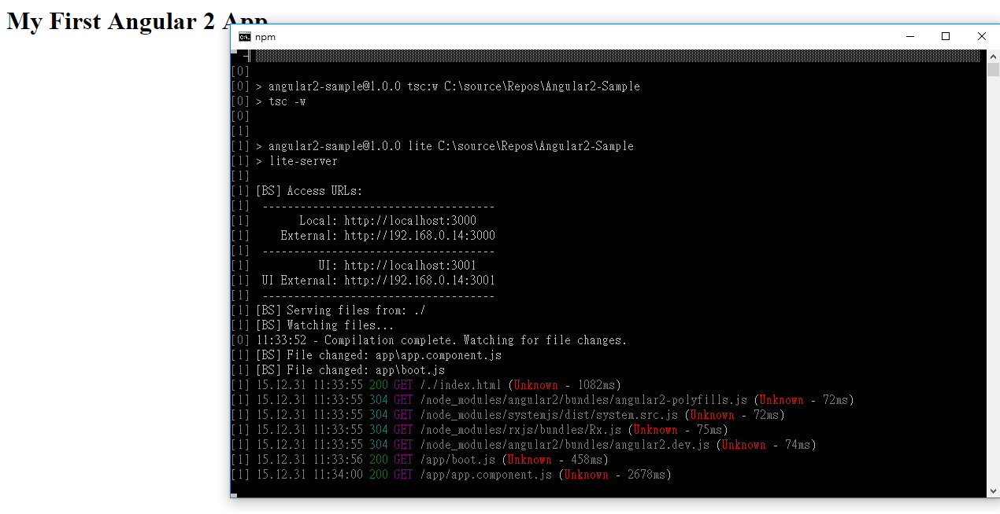
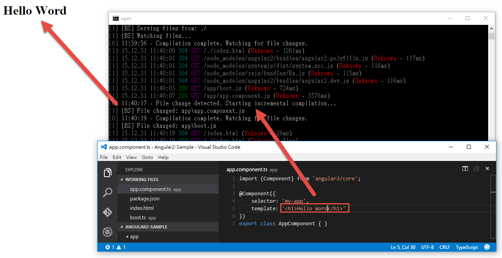

前言
每次看到前端的演進，真的讓人覺得自己就像在洪流之中，不斷的被大潮流沖來沖去，從最最早的 Flash 到 Silverlight，從 Dom 的控制，到 jQuery，從 ASP.NET MVC 4 內建的 knockout 到 AngularJS ，又從 AngularJS 到 React ，然後如今，又回到 Angular2 …
每次看到新技術，都會不自覺的讚嘆，”哇，這實在是太酷了，太棒了”，但每年換一次的技術疲勞，沒有愛，還真的走不下去….
所以這篇，秉持著愛與正義 ( 疑!? ) ，還有友情 ( 這是 JUMP 嗎??..)
就在 2016 年的第一天，讓我們就來看看，經過浴火重生的 Angular2 的初體驗吧~~ ( 羞 )
P.S 這篇是由官方的 5 min 實作課程衍生而來，有興趣的也可以參考官方文章。
P.S 2 此篇我們會依據 TypeScript 來進行，基本上，如果你常寫 es6 ，那應該也不用太擔心，而且這篇簡單到炸掉，大家更可以不用擔心。但若你真的真的很希望用原生的 JavaScript ，那你一樣可以參考官方網站的教學的教學。
p.s 3 完成的目錄如下，基本上因為是 TypeScript ，所以是 .ts 檔案，而 .js 和 .map 是透過產生產生出來的，所以不用理會，大家只要知道目錄結構即可。

p.s 4 過程中會使用到 npm ，而這篇文章撰寫的時候，電腦是裝 Node.js 5.3.0 版本，所以還沒裝 Node.js 的朋友，請記得裝一下…
p.s 5 過程中，小弟會加上很多自己查的資料與理解，如有錯誤，請多包涵。
使用 npm 裝上套件
一開始，其實也沒有甚麼，大家可以決定一下自己想要的目錄，建立一個新的目錄，然後我們就可以開始動作，當目錄準備完畢後。我們就可以用 npm init 來建立一個新的 package.json

如下，我們 package.json 就建立完成了。

接下來，你可以選擇你喜歡的開發工具，( 小弟這邊是使用 Visual Studio Code ) 來進行開發，我們這邊很簡單的，把官方提供的 package.json 貼到剛剛產生的檔案即可。
如果用 VS Code 還會有提示….

( 為什麼不用 npm install 一個一個安裝勒!? 那是因為可能會遇到版本相依的問題， 目前官方提供的這一個 package.json 是一定可行的。 )
1 | { |
devDependencies
那上面那些套件分別是做什麼的呢??
首先，我們先看 devDependencies，這邊他分別裝了 concurrently、lite-server、typescript。
concurrently 主要是提供了
1 | "start": "concurrent \"npm run tsc:w\" \"npm run lite\" " |
這一行的效果，原本在 Windows 環境下，要同時 run 多個 Task ，是要額外寫 PowerShell 的 ( 映像中 )，而這邊透過 concurrently 來達到此效果。
那 npm run tsc:w 的意思就是，啟動 TypeScript 並且即時監看，當 .ts 檔案有變動的時候，就會去自動去編譯成 js 檔案，所以這邊實際上也就是用到了 typescript 套件。
另外 npm run lite ，就是去 run lite-server，而 lite-server 其實也內建了 Live-Reload ，所以最終測試的時候，就可以看到，我們立刻改 ts 檔案，瀏覽器會自動重整 ( 但我更想要 Hot-Reload 阿!! )，而這邊，實際上就是使用了 lite-server 套件。
dependencies
而 dependencies 裡面，angular2 就不用說了，所有 angular2 的核心，都在這個套件裡面。
rxjs，大概在 2~3 年多前，因為有聽說是 Microsoft 寫的一個開源方案 ，所以就有稍微注意過，後來有一次 JSDC 更有神人去介紹，但後續也並沒有真的拿來實作，就直接放生了 XDDD ，而這次在 angular2 裡面，angular2 使用 rxjs 來實現非同步和以 event-base 、 observable 的應用程式流程，關於詳細，未來再來補充。
es6-promise、es6-shim ，這個大家應該就比較熟悉，透過他來轉換 es6 到 es5 的語法，讓大家開開心心的寫 es6 ，但實際是會協助幫忙處理成 es5；那是因為 angular2 有用到 es6 的功能，所以要透過這兩個套件與舊版的瀏覽器相容與轉換。
reflect-metadata 則是協助 es7 的 Decorators 功能在 es5 上實現，這是類似 C# 的 Attribut 的感覺，這東西在 TypeScript 1.5 beta 的時候，TypeScript 使用了 reflect-metadata 來實現此功能，而在 angular2 更可以很清楚的看到了 attribut 的影子 ( 例如 @Component )。有興趣的可以參考這邊
zone.js 是執行過程的context，可以在非同步之間進行傳遞。對岸神人有很詳細的介紹可以參考這邊
官方處理 module 的預設方案是 systemjs，當然，官方也說，如果想使用 webpack 也可以，官方並沒有強迫一定要使用哪一套，但在官方文章裡面，目前預設是使用 systemjs 來處以 module。
注意事項
基本上，隨著時間的演進，大家一定可以看到最新版本，但要注意，小弟目前在使用的情況下，es6-shim 使用 0.34.0 會有問題，所以還是建議 es6-shim 使用 0.33.3 ，其他部分，小弟目前都是用到最新，還沒遇到問題過。

接下來，大家就可以使用 npm install 來安裝，如果過程中發現 err ，不用擔心，那是因為某些套件會需要重 build ，但你的電腦可能沒裝 C++ 或是 Python ，所以無法編譯，而無法編譯的情況下，就會直接使用預設的套件。
只要最後裝完，npm 沒和你說 err ，就不用太擔心了。

到此，準備工作結束。
準備 tsconfig.json
這邊 package.json 完畢之後，要準備一下給 TypeScript 用的 Config，我們只要再跟目錄下，加上 tsconfig.json 並且把底下內容複製過去即可，這邊比較需要注意的是 noImplicitAny 這個參數；這個參數是當你的物件沒辦法判斷型別的時候，要不要有警告，Angular2 的團隊則是建議 false ，但如果你真的想要，你也可以開啟。

1 | { |
撰寫第一個 Angular2 元件
接下來，我們就可以撰寫第一個 angular2 的元件，在 AngularJS 的時代，雖然有 Directive ，但大家多半開始學的時候，還是比較把注意力放在 Data-bind 的機制上，到後期，才會開始寫一些 Directive；而在 angular2 的教學裡面，我們可以看到，第一步就先學 angular2 的元件，也可以從這邊知道，angular2 的核心會和 react 一樣，都注重在元件的開發。
那怎樣寫元件?? angular2 的元件比 Directive 好寫多了!!
首先，我們的目錄結構如下，我們就在 app 這個目錄下，多增加一個 app.component.ts 這個檔案。
( 因為我們要使用 TypeScript 所以使用 .ts )
如下圖。
接著，我們看一下程式碼；我們要 import Component 進來，所以我們可以使用 import {Component} from ‘angular2/core’; 來載入 Component 。
接下來，我們可以定義一個 class AppComponent ，這邊因為是簡單的 Hello World，所以 AppComponent 裡面沒有任何東西，不然裡面可以放一些初始化的東西和關於此元件的方法。
另外，前面的 export ，透過 export ，讓他輸出成 module ，到時候就可以給其他 module 載入使用。
最後，@Component ，就類似 C# 的 Attribut ，透過這邊的設定，我們就可以設定標籤的名稱 ( 所以等下我們會使用
完整的元件如下；
1 | import {Component} from 'angular2/core'; |
準備 bootstrap
接下來，我們要讓程式有個進入點，在 React ，小弟記得大家習慣用 app.js ，而在 C# ，可能就是 main ，而在 angular2 裡面，官方也建議有一個進入點，所以這邊，我們就要準備一個 boot.ts 當作進入點。
而這邊，我們一樣在 app 目錄下，加上 boot.ts 這個檔案，如下圖。

同上，我們使用 import 來載入 bootstrap 和 AppComponent ，而 AppComponent 就是我們上面寫好的元件，然後透過 bootstrap(AppComponent) 來啟動整個 angular2 。
程式碼如下。
1 | import {bootstrap} from 'angular2/platform/browser' |
index.html
當然，還是要有個 index.html，所以我們就在根目錄下產生一個 index.html，如下圖

這邊我們沒有特別把所有的 js 打包，畢竟這是一個簡單的範例，所以我們還是依據官方的教學，在 index.html 載入 script。
其中特別需要注意的是，根據官方文件 angular2-polyfills.js 和 Rx.js 是 angular2 必要的 lib，一定要放在 index.html 的 script 裡面。
而這邊比較特別的，是 script 標籤裡面，這邊使用了 systemjs 來載入剛剛寫好的 bootstrap，所以我們可以看到，在 script 標籤裡用，用了 System.config 來設定 systemjs；這邊定義了 package 的形式，底下的 app 代表的是目錄，所以代表著設定這個目錄裡面的東西，接著我們可以看到 format 為 register ，而這個 register 代表著使用 System.register 或 System.registerDynamic 元件的格式；而 System.register 其實就是代表著使用在 es5 裡面使用 es6 的 module。官方文件
而 defaultExtension 代表著後面的副檔名為 js 檔案。
並且用 System.import 來載入元件，所以這邊代表著載入 app 目錄底下的 boot.js 這個檔案，而如果成功，就不用管他 ( null ) ，失敗的話，則輸出錯誤 ( console.error.bind(console) )
1 | <html> |
Run
接下來，如果要 run ，非常簡單，我們只要在 Command 底下，輸入 npm start 就可以啟動了；如下圖。

而預設已經包含了 Live-Reload ，所以我們可以修改一下程式碼，存檔後，就可以看到瀏覽器重新載入。

以上，簡單又複雜的 angular2 初體驗。
後記
官方說是 5min 快速 Hello World ，如果不管這些 Detail ，實際上，真的 5min 內可以搞定，但如果要了解這些東西，要看的東西還真的不少；但學一個東西，有的時候如果不知道始末，真的會感覺虛虛的，所以小弟就在邊看邊研究的情況下，順便完成了一下這篇筆記，很多東西也是第一次看到，所以如果內容有錯誤，也請大家多多包涵與見諒，謝謝大家。
參考資料
- https://www.npmjs.com/package/concurrently
- http://www.typescriptlang.org/
- https://github.com/johnpapa/lite-server
- https://github.com/ReactiveX/RxJS
- https://github.com/jakearchibald/es6-promise
- https://www.npmjs.com/package/reflect-metadata
- https://github.com/angular/zone.js/
- https://github.com/paulmillr/es6-shim
- https://github.com/systemjs/systemjs
- https://angular.io/docs/ts/latest/quickstart.html#!#package-json
- http://segmentfault.com/a/1190000004233348
- http://sparkshining.com/2015/10/10/introduction-to-zone-js/
- https://github.com/ModuleLoader/es6-module-loader/blob/v0.17.0/docs/system-register.md